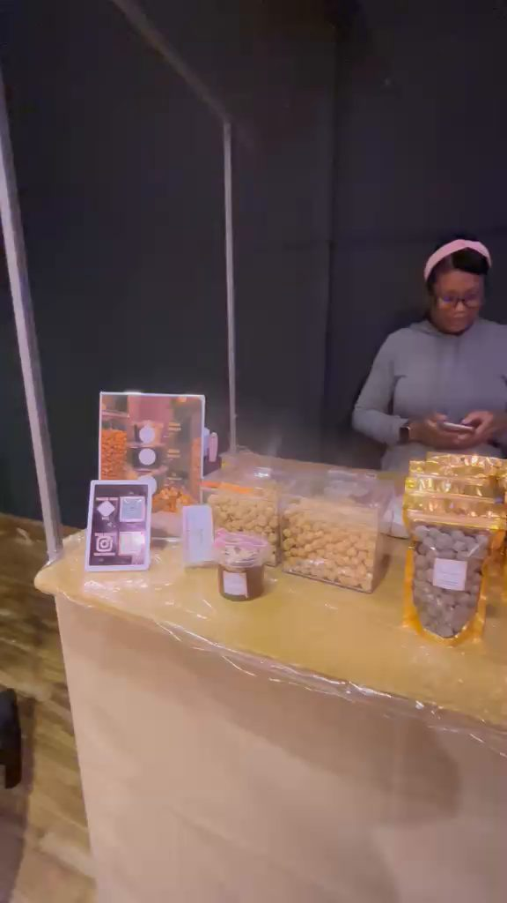
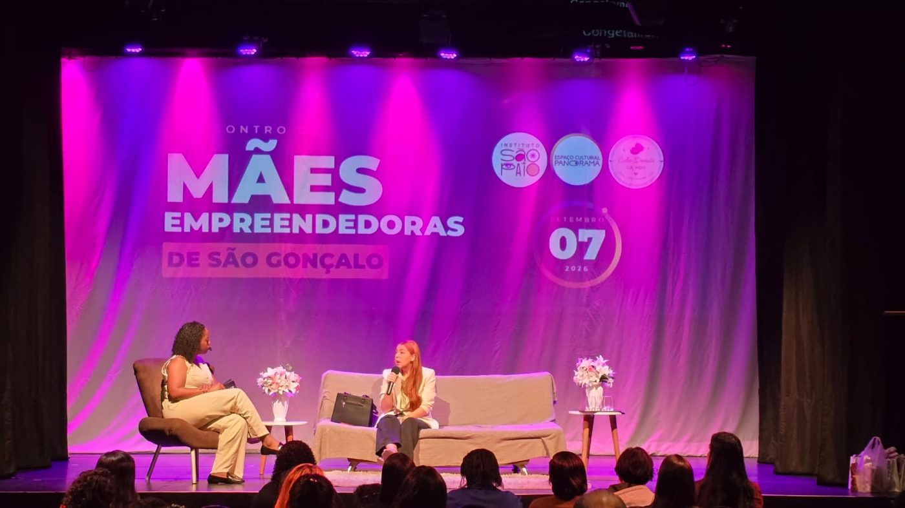
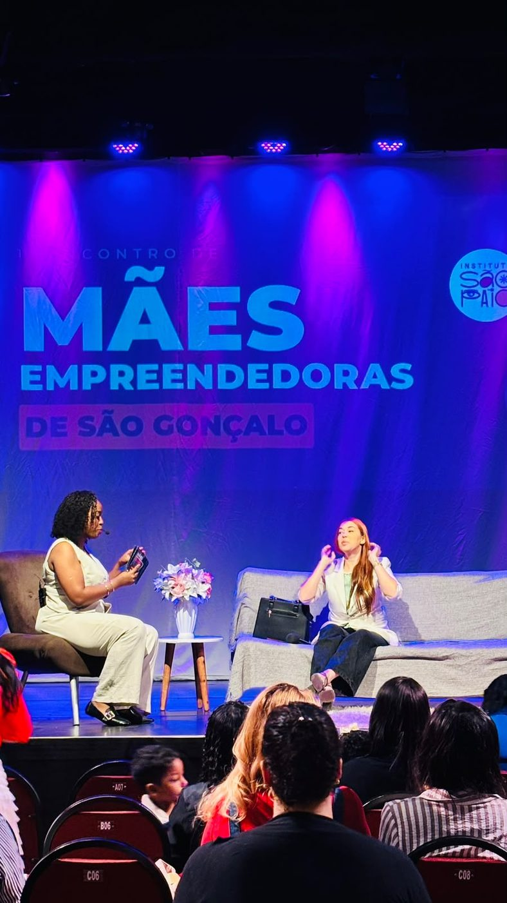
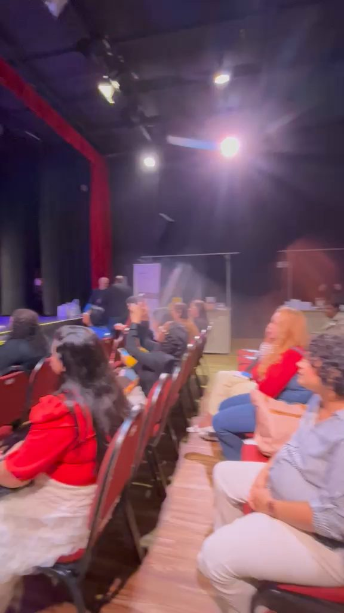
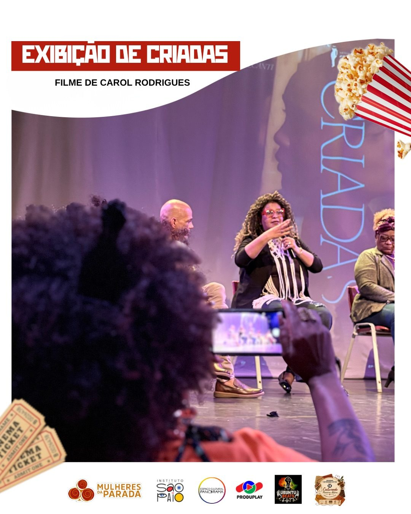

2026
Casa Amarela inaugurada
O Colubandê ganha uma biblioteca de porta aberta, com acervo para todas as idades e empréstimo gratuito.
Nossas conquistas
Mais de uma década transformando São Gonçalo por meio do esporte, da educação e da cultura, com projetos abertos à comunidade.
O Colubandê ganha uma biblioteca de porta aberta, com acervo para todas as idades e empréstimo gratuito.
Agenda mensal e gratuita sobre a Doença de Alzheimer, com a ABRAz Regional Rio de Janeiro. O primeiro encontro reuniu 120 pessoas.
Primeiro encontro de mães empreendedoras de São Gonçalo, com teatro lotado e programação gratuita.
Sessões gratuitas de cinema no teatro do Panorama, com roda de conversa, feira e sarau nas noites especiais.
Sessões gratuitas de cinema na Fazenda do Colubandê, alcançando mais de 6 mil espectadores.
Produção Executiva e Acessibilidade no Audiovisual, gratuitos, via Lei Paulo Gustavo.
Sediamos o 1º Fórum do Laboratório de Políticas Culturais de São Gonçalo.
Pesquisa para o livro de 25 anos do Aprendiz Musical (Niterói), validada por documentação oficial.
"Desafios à Economia Criativa da Cultura", em debates organizados pela FAPERJ.
Videocast gratuito que valoriza multiartistas fluminenses, produzido no Panorama.
Número a gente conta em relatório. Aqui a gente mostra quem estava na cadeira, na feira, na aula e na estante. Cada ação tem o seu álbum. As fotos passam sozinhas, e ao clicar abre a galeria daquela ação.


Setembro de 2026. Roda de conversa sobre a Doença de Alzheimer com 120 pessoas no teatro.





Palestra, feira e roda de negócios no mesmo dia, com o teatro cheio.




Sessão gratuita, roda de conversa, sarau e feira nas noites especiais.


Da inauguração ao empréstimo diário, e a tenda que leva o acervo para a rua.


Música, dança e teatro nas salas e no palco do Panorama.

Videocast gravado no estúdio do Instituto, com multiartistas fluminenses.